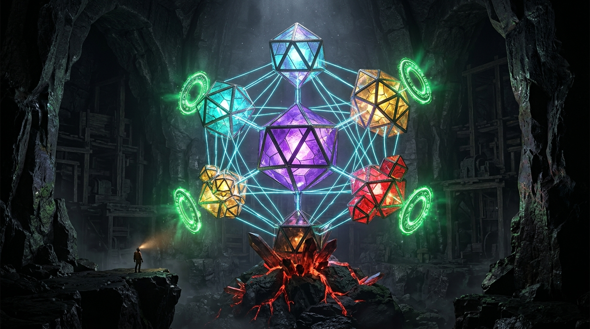

НАБЛЮДАТЕЛЬ В ШТОЛЬНЕ:
«Мы в самом низу, у угольного пласта. Чтобы подняться к свету, начни с первого кристалла в породе — настрой Конструктор Удачи.»
Нажмите на янтарный кристалл внизу (1) ↓

«Мы в самом низу, у угольного пласта. Чтобы подняться к свету, начни с первого кристалла в породе — настрой Конструктор Удачи.»